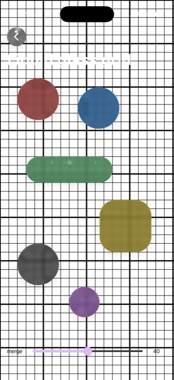

Каталог / Стекло и кнопки
LiquidGlassGroup и Presence
Общий проход по фону для нескольких плит, слияние плит в одну форму и анимированное появление.
Как выглядит




Что это
LiquidGlassGroup— одна пара «размытие + шейдер» на все плиты внутри (до 8). Сspacingплиты, оказавшиеся ближе, плавно сливаются в одну форму (аналогGlassEffectContainer(spacing:)).LiquidGlassPresence— анимирует появление/исчезновение плиты (presence0→1).LiquidGlassSuspend— рисует стекло плоским, покаsuspended: true(поддерево живо, но GPU на него не тратим).
Пример
LiquidGlassGroup(
spacing: 40,
child: Row(mainAxisSize: MainAxisSize.min, children: [
LiquidGlassPresence(
show: showSecond,
builder: (context, p) => LiquidGlass(presence: p, interactive: true, width: 64, height: 64, child: const Icon(Icons.edit)),
),
LiquidGlass(interactive: true, width: 64, height: 64, child: const Icon(Icons.add)),
]),
)Параметры (из dartdoc)
LiquidGlassGroup
| Параметр | Тип | По умолчанию | Описание |
|---|---|---|---|
child | Widget | required | |
spacing | double | 0 | Plates closer than this (logical px) melt into one shape while one of them is pressed, appears or vanishes, like SwiftUI's GlassEffectContainer(spacing:); their gap bridges at about half of it. At rest every plate keeps its own shape. |
LiquidGlassPresence
| Параметр | Тип | По умолчанию | Описание |
|---|---|---|---|
show | bool | required | |
builder | Widget Function(BuildContext context, double presence) | required | |
duration | Duration | const Duration(milliseconds: 450) | |
curve | Curve | Curves.easeInOutCubic |
LiquidGlassSuspend
| Параметр | Тип | По умолчанию | Описание |
|---|---|---|---|
suspended | bool | required | |
child | — | required |
Импорт: import 'package:swiftuikit/swiftuikit.dart';